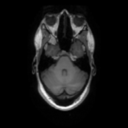
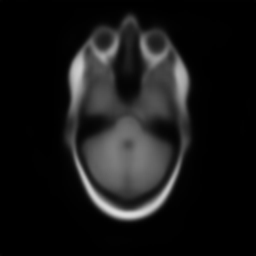

From Pixels to Latent Spaces
Understanding Autoencoders and Variational Autoencoders: an experimental, visual-first journey through representation learning and generative modelling, built entirely from my own trained models on brain MRI and faces.


A real test slice, the actual 16-number code my trained autoencoder writes for it, and the image it rebuilds from those 16 numbers alone. Why it comes back blurry, what those numbers mean, and how a VAE turns this into a model that can create new images: that's what these chapters are about.
The chapters
Each chapter follows the same pattern: learning objectives, the intuition, the mathematics, a diagram, the implementation, real results, how to read them, limitations and key takeaways. Read them in order, or jump straight to what you need.
Two datasets, one protocol


The series
This is part 1 of a longer series on deep generative models. Each part uses the same honest approach: real experiments, real failures, and visual explanations.
Code, models and demo
By Chandra Prakash Bathula. Research models only: reconstructed or generated brain images are not diagnostic images.